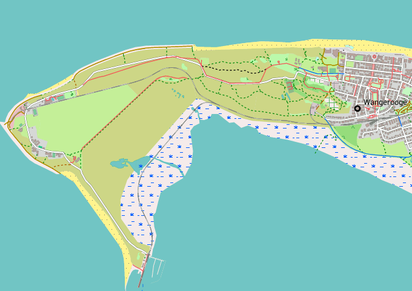

Um die Freizeitkarten korrekt anzuzeigen, ist ein passendes Design (Theme) zu installieren und dessen Nutzung in der Karten-App zu konfigurieren.

Wangerooge - die Nordsee-Insel ist in den letzten 200 Jahren um circa 2 km nach Osten gedriftet.
Hinweise zum Download:
- Klick auf das Netbook Icon im PC-Browser: das Design (Theme) wird auf den Personal-Computer geladen
- Klick auf das Locus Map Icon im Android-Browser: das Design (Theme) wirf direkt nach Locus Map geladen
- wurde eine Karte über die Methode "Locus Map" geladen, ist das Design "freizeitkarte" bereits vorhanden
|
|
← |
Design "freizeitkarte" 0.1 MB |
→ |
|